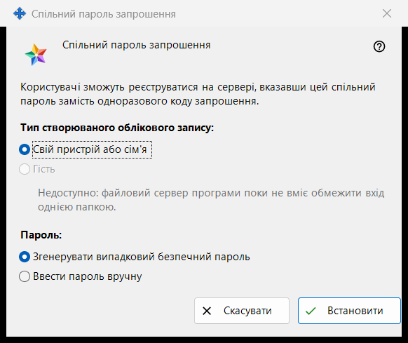
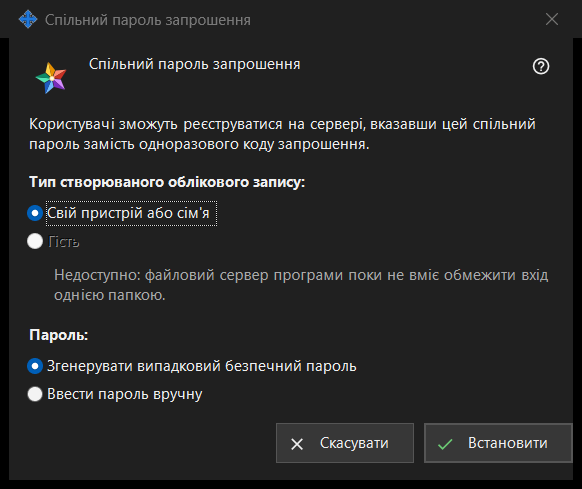

Спільний пароль запрошення
Призначення
У цьому вікні задається один спільний пароль, із яким користувачі реєструються на сервері замість одноразового коду запрошення. Вікно відкривається, коли ви позначаєте «Спільний пароль запрошення» в групі «Запрошення» налаштувань сервера обміну, або кнопкою «Задати спільний пароль..» поруч.


Порядок дій
- Виберіть тип облікового запису.
- Виберіть, чи згенерує пароль програма, чи ви введете його самі.
- Натисніть «Встановити».
- Якщо пароль згенеровано, скопіюйте його у вікні, яке показує його один раз.
- Щоб припинити приймати цей пароль, зніміть позначку «Спільний пароль запрошення» і підтвердьте.
Елементи вікна
Тип облікового запису
«Тип створюваного облікового запису:» пропонує «Свій пристрій або сім'я» та «Гість». «Гість» вимкнений, а рядок під ним називає причину: файловий сервер програми не може обмежити вхід однією текою. Якщо спільний пароль уже ввімкнено, його поточний тип вибрано заздалегідь. Якщо цей наявний тип - «Гість», кнопка «Встановити» вимкнена; спільний пароль за цього можна вимкнути.
Пароль
«Пароль:» пропонує «Згенерувати випадковий безпечний пароль» (вибрано за замовчуванням) і «Ввести пароль вручну». Після «Встановити» введений вручну пароль запитується у вікні пароля, яке перевіряє правила: не коротше за 10 символів, із великою та малою латинською літерою і цифрою. Скасування в цьому вікні повертає сюди.
Встановити
«Встановити» надсилає серверу пароль і тип облікового запису та вмикає спільний пароль; на сторінці з'являється «Спільний пароль запрошення збережено й активовано.», а рядок під прапорцем показує «Спільний пароль увімкнено (тип облікового запису: ..).» Згенерований пароль показується один раз в окремому вікні: скопіюйте його там, прочитати його знову не можна. Будь-хто, хто знає пароль, може зареєструвати обліковий запис вибраного типу, тому передавайте його лише тим, кого хочете допустити.
Вимкнення
Зняття позначки запитує: «Вимкнути спільний пароль запрошення? Нові реєстрації за ним стануть неможливими.» Відповідь за замовчуванням - «Ні». Після «Так» на сторінці з'являється «Спільний пароль запрошення вимкнено.», а рядок під прапорцем показує «Спільний пароль вимкнено.»
Скасування
«Скасувати» або Esc закривають вікно, нічого не змінюючи. Якщо ви відкрили його, позначивши прапорець, прапорець повертається в попередній стан.
Налаштування менеджера · Налаштування спільного доступу SFTP · Налаштування сервера обміну